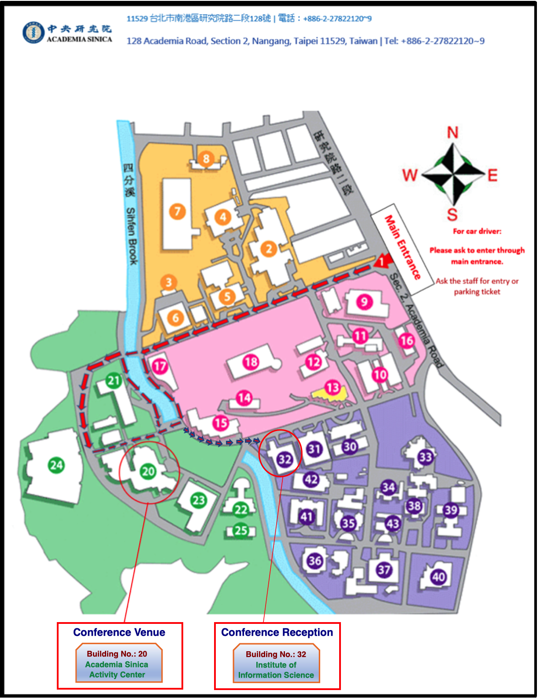

Venue
PRDC 2018 will take place at the
Activity Center of Academia Sinica. Academia Sinica was founded in 1928 to
promote and undertake scholarly research in sciences and humanities. After the
government moved to Taiwan in 1949, Academia Sinica was re-established in Taipei.
It currently consists of twenty-four research institutes and seven research centers
covering three research disciplines of mathematics and physical sciences, life
sciences, and humanities and social sciences.
Academia Sinica is the most preeminent academic research institution in Taiwan.
Many of the twenty-four research institutes and seven research centers are headed
by world-renowned scholars and staffed by highly trained, motivated, and creative
young investigators. Aside from placing greater emphasis on opening up new areas of
intellectual endeavor, Academia Sinica is also taking a leadership role in
launching new initiatives in applied areas to meet a broad spectrum of social needs
in Taiwan.

Activity Center
You may reach the conference venue Academia Sinica by taxi or bus. The picture below displays the campus of Academia Sinica where Activity Center is located.
Please click the links to know how you can roam in and around Academia Sinica: Detailed Map #1, Detailed Map #2.
{kind=link}
Dining options at Academia Sinica
The Activity Center has two restaurants:- The Chinese restaurant is located on the first floor with service hours of breakfast 7:00-9:30, lunch 11:30-14:00, dinner 17:30-20:30.
- The "Cafe Sinica" behind the Activity Center is operated by the "Howard Plaza Hotel, Taipei", with service hours of breakfast 7:00-10:00, lunch 11:30-14:00, dinner 17:30-21:00.
Neighborhood restaurants:
- BeiYun chinese restaurant is across street to the AS main entrance on the left.
- Garden western restaurant is behind the HuShih elementary school inside the flower market.
- Dining is never a problem in Taipei. Most of the convenient stores are open 24 hours selling boxed food. Out of the campus there are a couple good restaurants.
- Many famous restaurants are in the Taipei-101 district, with a 15 min ride by a Taxi from Academia Sinica. Dinner service is usually closed by 21:00.